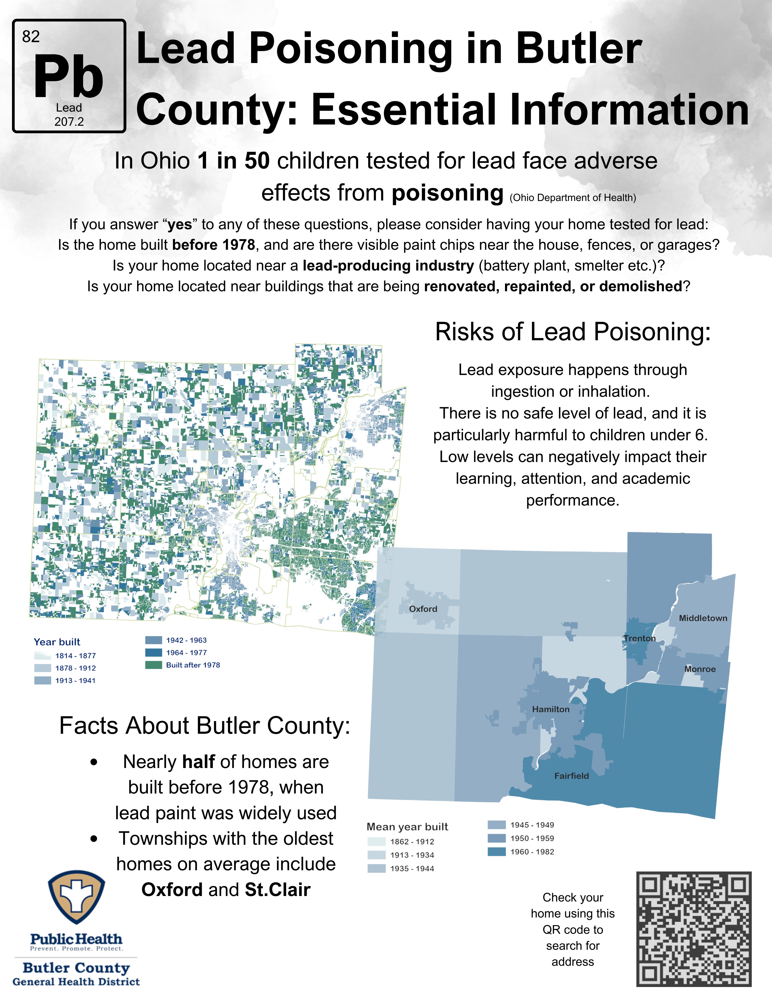

Chronic Disease Prevention
ü©∫ Preventing Chronic Disease: Public Health GIS for Butler County
In collaboration with the Butler County Health District, I developed interactive spatial tools to support public health planning and outreach. These applications help identify at-risk populations, inform prevention strategies, and improve access to critical services.
ü•£ Food Access & Healthier Eating

This map displays soup kitchens and food pantries offering healthy options across Butler County. The goal is to reduce rates of diabetes and heart disease by increasing access to nutritious foods in underserved areas.
üè† Lead Risk: Age of Housing Units

This map highlights housing units by construction year to assess exposure risks to lead-based paint, especially in homes built before 1978. It supports childhood health and environmental safety efforts.